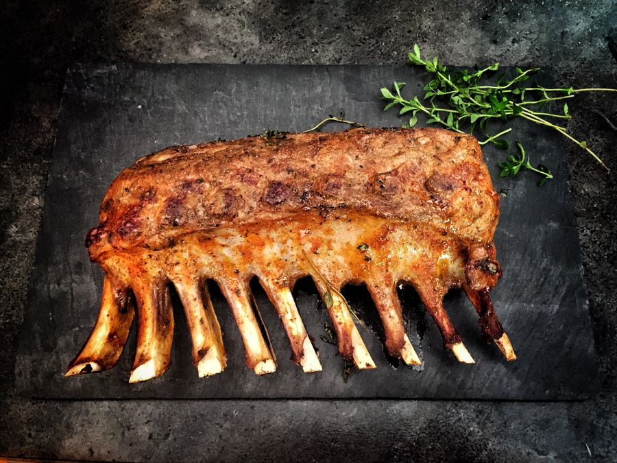
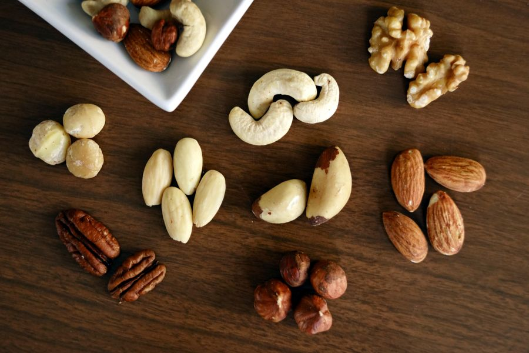
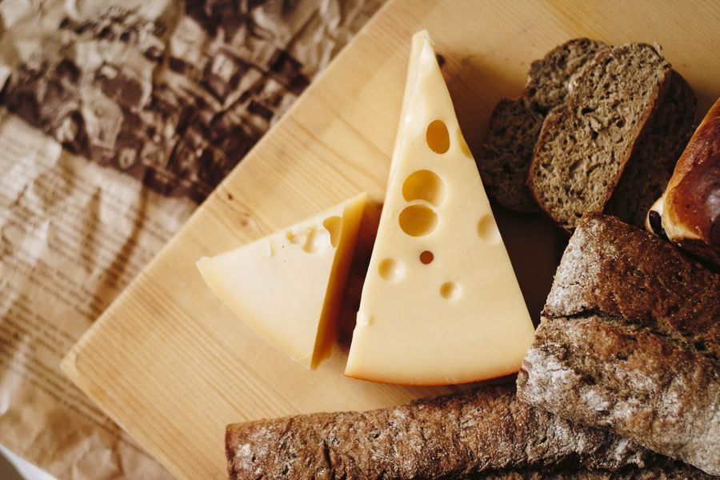

Hand-Cut Meats
Steaks, chops, roasts, and specialty cuts cut fresh in-house every day.
30-day aged steaks, 30+ brat flavors, Wisconsin cheese, and a curated wine and craft beer selection — opening at 118 Ash Street.
What We Carry
Hand-cut in-house, sourced local where we can, and aged with care. Here's what you'll find when we open.

Steaks, chops, roasts, and specialty cuts cut fresh in-house every day.

Premium dry-aged for thirty days for deep, beef-forward flavor.
From classic Wisconsin to our own creations — there's a brat for every taste.
Hand-seasoned and smoked. Stock-up cuts for the cabin, the road, and the tailgate.

Curds, blocks, and specialty cheeses from cheesemakers across the state.
A curated cellar of bottles, six-packs, and locally-made gifts. Pet food and treats too.
Crossroads of the North Meats and Cellar is the work of Jen and Dennis Lutz — a family-owned shop built for a town they love. Spooner sits at the crossroads of Wisconsin's railroad history, lake country, and working farms, and that heritage runs through everything we do: hand-cut meat, house-made brats, and a curated cellar picked with care.
We're putting the finishing touches on 118 Ash Street, right in the heart of downtown. Our plan is simple — bring back the kind of local butcher and corner store where you know who's behind the counter, where the brats are made in-house, and where the cheese and wine were chosen by someone who actually tried them.
Jen and Dennis are committed to being hands-on partners with their team and their community. They can't wait to open the doors and welcome you in.
Steaks, chops, and roasts cut fresh on the block — not pre-packed.
Local farms and cheesemakers whenever we can. Look for the local tag on the shelf.
Jen and Dennis are at the counter, not in a boardroom.

"We're hands-on partners with our team and our community. We can't wait to open our doors."
Now Hiring
We're putting the team together for opening day. If working at a local, family-owned butcher and cellar sounds right to you, we'd love to hear from you.
Lead daily operations, our team, product quality, and the customer experience. Be the first manager of a brand-new Spooner business.
One scheduled day a week to help keep our store spotless. Flexible hours, friendly team, great for students or retirees.
Don't see your role? We're always interested in meeting good people. Send us a note and tell us what you'd bring to the counter.
Word of Mouth
We're opening soon at 118 Ash Street. Be the first to leave a review on Facebook.
No reviews yet — we're a brand-new shop. Once we open, we'd love to hear what you think. Drop a note on our Facebook page and help us get started.
Questions
Visit Us
We're right in the heart of downtown Spooner — easy to find, easy to park.
118 Ash Street
Spooner, WI 54801
Opening soon — exact hours to be announced.
The fastest way to reach us right now is Facebook Messenger. We'll be at the counter soon.
Crossroads of the North on Facebook for opening day, new brat flavors, and what's on the smoker.
Follow us on Facebook for opening day announcements, new brat flavors, and what's on the smoker.